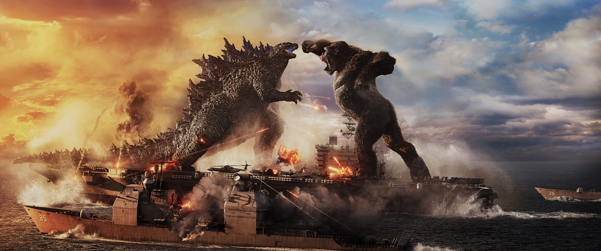

GODZILLA VS KONG

ABOUT THE FILM
- "Godzilla vs. Kong" is a crowd-pleasing, smash-'em-up monster flick and a straight-up action picture par excellence.
- It is a fairy tale and a science-fiction exploration film, a Western, a pro wrestling extravaganza, a conspiracy thriller, a Frankenstein movie, a heartwarming drama about animals and their human pals, and, in spots
-
- " It has rainstorms and explosions and into-the-wormhole light shows, giant mammals and reptiles and amphibians and insects
- tradition of environmental doom-saying and pre-grieving. But those elements turn out to have been sublimated, or submerged, like kaiju, retreating into the earth's core until rude forces bait them to return.
- A beguiling opening sequence establishes that, following a storm that wiped out Skull Island, King Kong has been moved to a research facility beneath a virtual reality dome that simulates his jungle habitat.
- He's being studied by anthropological linguist Dr.
- Ilene Andrews (Rebecca Hall) and her deaf adopted daughter Jia (Kaylee Hottle), sole survivor of the island's Iwi tribe.